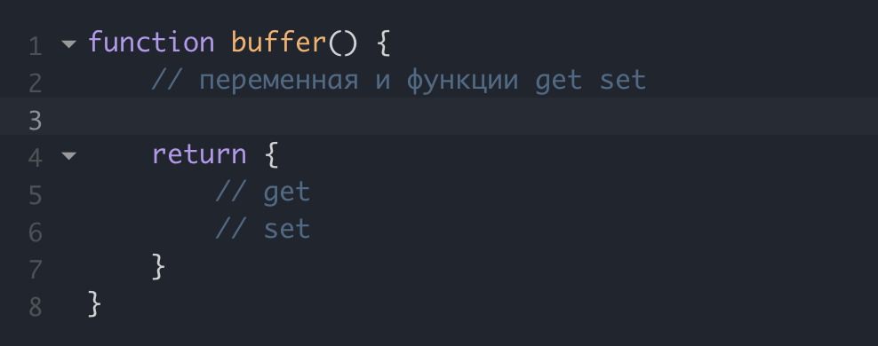

Перевести его в JSON заменив при этом значение lastName на test
К результату добавить + '123'
Перевести обратно в объект
Обернуть в try catch для вывода ошибки
ООП
Инкапсуляция
Наследование
Полиморфизм
Инкапсуляция
Упаковка данных и функций в единый компонент

Реализовать функцию buffer с методами get, set для обмена данными на одном уровне
Наследование
Концепция объектно-ориентированного программирования, согласно которой абстрактный
тип данных может наследовать данные и функциональность некоторого существующего типа,
способствуя повторному использованию компонентов программного обеспечения.
Ссылка на объект внутри метода это же объекта
Потеря контекста
Наследовать поля и методы родительского через apply/call
Полиморфизм
Способность обьекта использовать методы производного класса, который не существует на момент создания базового